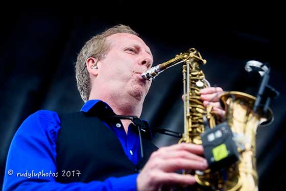
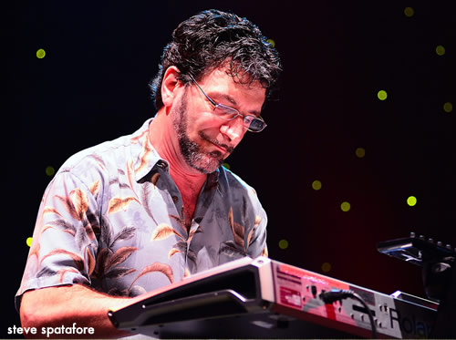
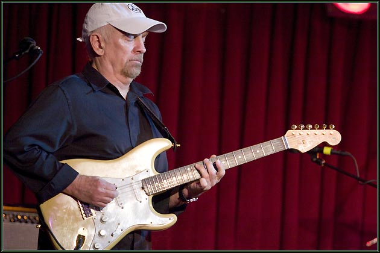

A little background
Average White Band originated in perth, scotland 1971 AWB are said to be one of the greatest soul and funk band in the history of music. They are mostly known for there mega hit “pick up the pieces” with 27 million monthly listeners on Spotify, they also had other great hits that were less popular like “cut the cake”and “let’s go round again” They have gotten many gold selling albums and multi- Grammy nominations for atlantic records
BAND MEMBERS
- 
Cliff Lyons- on the Alto Sax, Keyboard and Vocals
- 
Rob Aries- Keyboard and bass
- 
Onnie Mclntrye- Guitar and Vocals

Brent Carter- Lead vocals

Alan Gorrie- Lead vocals, Bass and Guitar

Rocky Bryant- Drums

Fred “Freddy V” Vigdor- Tenor Sax, Keyboard and vocals
OLD BAND MEMBERS

Hamish Stuart- Guitar 1972-1982

Steve ferrone- Drums 1974-1982

Malcolm Duncan- Tenor saxophone 1972-1982

Roger Ball-saxophone 1972-1982

Robbie Mclntosh-drums 1972-1974

Eliot Lewis- Guitar 1989-2002

Adam Deitch- drums 1998-2001

Klyde jones - guitar 2002-2011

Brian dunne- drums 2001-2006

Fred alias- drums 1998-1999

Peter abbott- drums 1994-1998
Biggest Hit

There album AWB achives Gold status by becoming the Number 1 on Billboard Pop and R&B Album Charts. Pick Up The Pieces, The Number 1 Billboard pop single at the time becomes a hit around the world and receives a Grammy Nomination for best R&B instrumental performance.